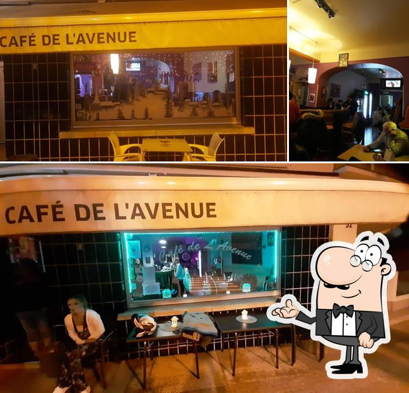
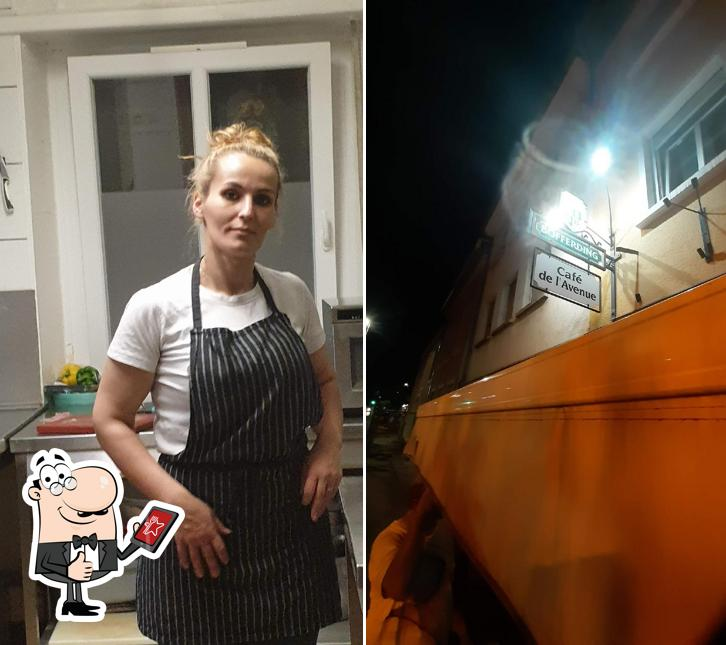
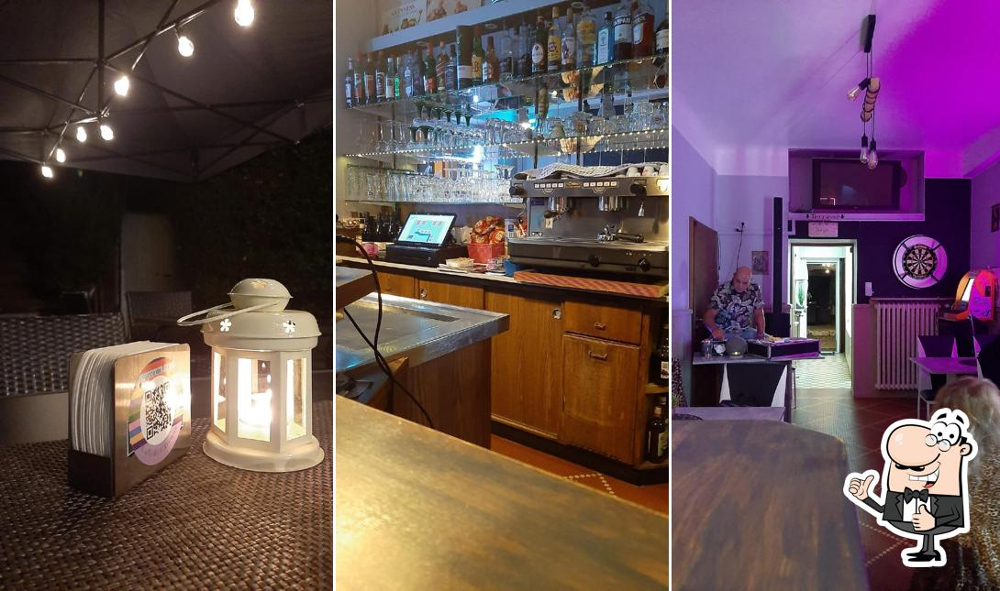
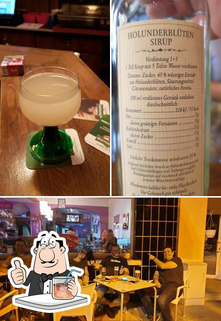
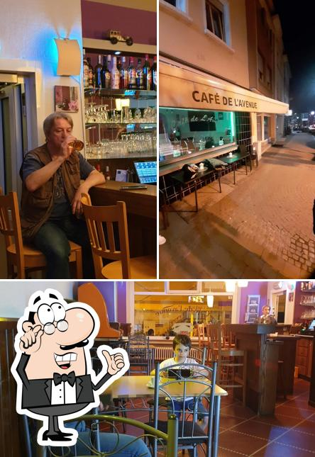
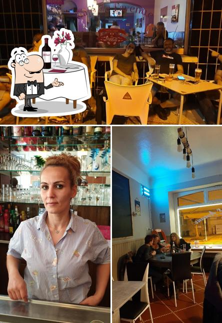
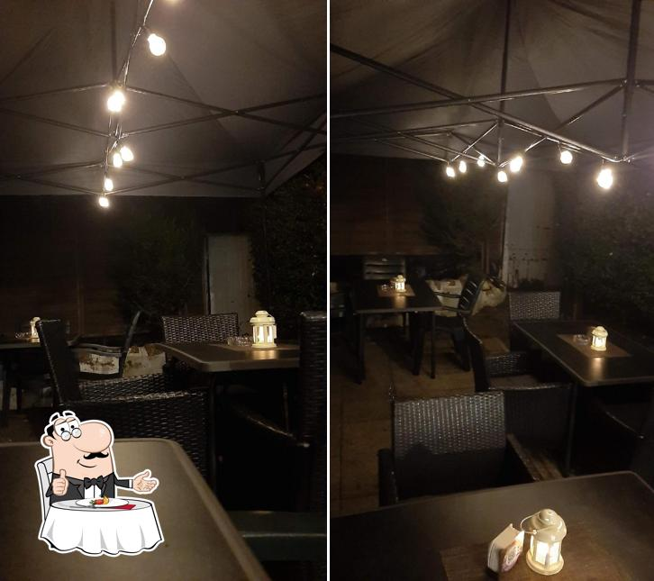
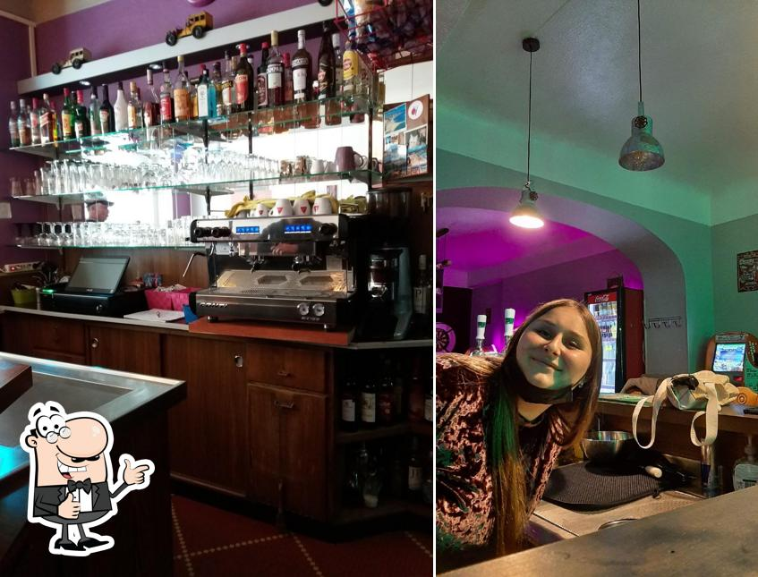

Un café de quartier à Schifflange : le café du matin, un bon plat du jour à midi, un verre tranquille en terrasse le soir — et l'on reste ouvert jusqu'à 1 h, tous les soirs.

Un même comptoir, cinq moments de la journée. Suivez l'heure.

Expresso, cappuccino et le journal au comptoir. On ouvre tôt pour le quartier.
Une assiette qui change chaque jour — le rendez-vous du déjeuner sur l'Avenue.

Un café, une pause au calme sous les guirlandes. Le coin tranquille du quartier.

Un verre après le travail, entre voisins et habitués. L'ambiance monte doucement.

On reste ouvert tard, tous les soirs. Le dernier café-bar allumé de l'Avenue.

Les plats ci-dessus sont des exemples illustratifs. La carte, le plat du jour et les prix sont à confirmer avec l'établissement.
Quand la nuit tombe sur l'Avenue, les guirlandes s'allument et la terrasse devient le salon du quartier. Un dernier verre, une conversation qui traîne — sans regarder l'heure.


Au cœur du quartier Terres Rouges, à Schifflange. Un café où l'on entre sans façon.